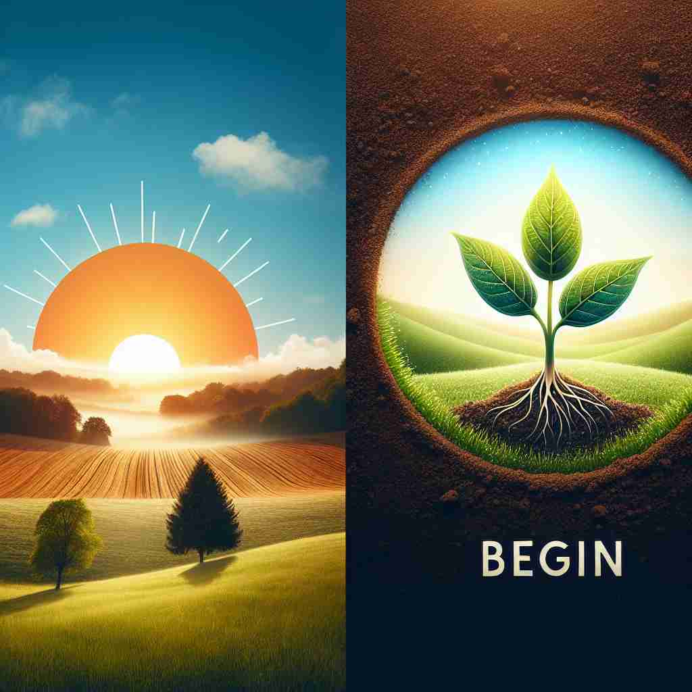

💬 The teacher will begin the lesson soon.

💬 The runners are ready to begin the race.
💬 It is time to begin the meal with delicious soup.

💬 Every morning, we begin a new day full of possibilities.
🔈 [bɪ'gɪn]
🗝️ v. to start doing or happening
🖼️ 在一个专注的音乐会场景中，指挥家高高举起指挥棒，全场屏息以待。指挥棒轻轻落下，乐队开始演奏，音乐开始流淌，'begin' 就是音乐开始的那一刻。
🔍 想象一条线的起点，这就是'begin'的核心含义。无论是时间、事件、言语还是状态，都有一个开始的点。通过联想这个起点，你可以轻松理解和记忆'begin'的各种用法。这个词总是表示某事物的开端或起始。
💬 The teacher will begin the lesson soon.
💬 The runners are ready to begin the race.
💬 It is time to begin the meal with delicious soup.
💬 Every morning, we begin a new day full of possibilities.
🌳 由前缀 'be-'（表示动作的开始）和词根 'gin'（古英语 'ginnan' 开始）组成，构成动词，表示 '开始' 的意思。
💡 记忆 'begin' 时，可以联想为 'be' 和 'gin' 的组合，将其视为从某点开始启动某个行为。可以想象一个新的项目从 '开始' 到 '进行（gin）' 的过程。
🗝️ v. to come into existence
🖼️ 在一个明亮的实验室中，科学家将两种化学液体混合在一起。观察者盯着试管，一点点气泡慢慢产生，象征着一种新物质的形成，这就是'begin' 的过程：从无到有。
💬 Life began on Earth billions of years ago.
❓ 从无到有，开始存在
🗝️ v. to start speaking
🖼️ 在一个安静的会议室里，发言者站在讲台前，心里酝酿着即将发表的重要演讲。他轻咳一声，微笑着对听众们说：'Ladies and gentlemen...'，这一刹那，他'begin' 讲话了。
💬 He began by thanking everyone for coming.
❓ 开始进行语言交流
🗝️ v. to start a career or activity
🖼️ 在一所充满活力的新公司里，一位新员工走进他的办公桌，他的桌上摆放着一本崭新的日记。今天是他职业生涯的第一天，他正准备'begin' 他的新工作旅程。
💬 She began her career as a teacher.
❓ 开始一段新的人生经历
🗝️ v. to be the first part of something
🖼️ 在一个作家忙碌的工作室里，他正坐在电脑前，屏幕上空空如也。对于这部长篇小说，他正在思索如何开始，于是输入了：'It was a dark and stormy night...' — 故事由此'begin'。
💬 The story begins with a description of the town.
❓ 作为某事物的起始部分
🗝️ v. to start to happen or appear
🖼️ 在一个宁静的黎明前，天空依旧一片漆黑。突然，地平线处微微泛出光亮，日出即将'begin'，新的一天也即将来临。
💬 It began to rain just as we left the house.
❓ 某种状态或现象开始出现